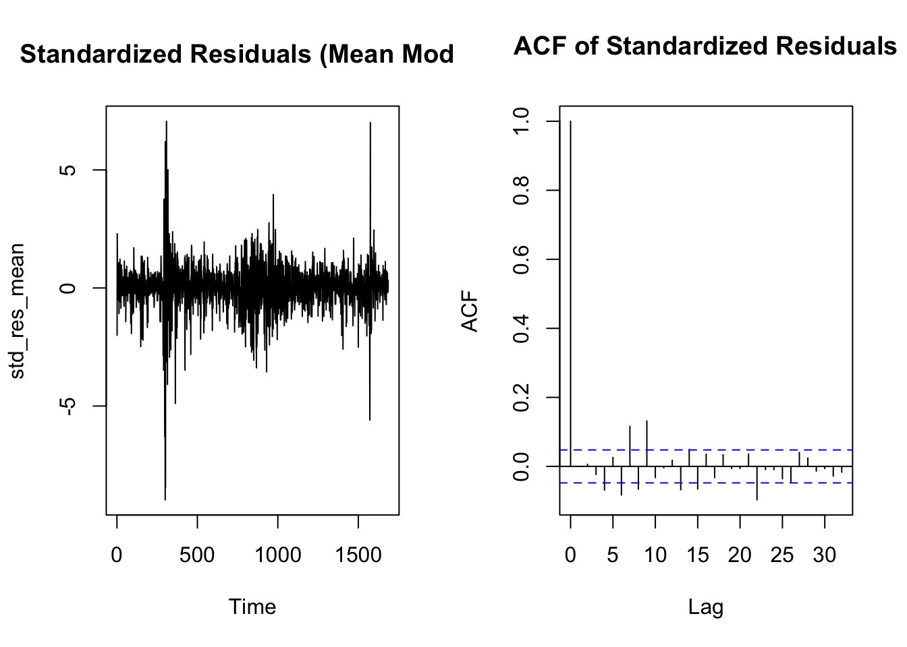
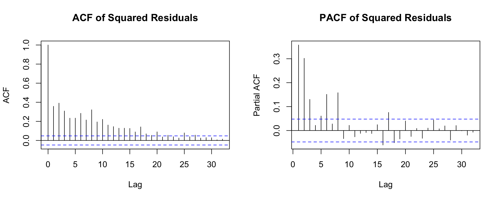
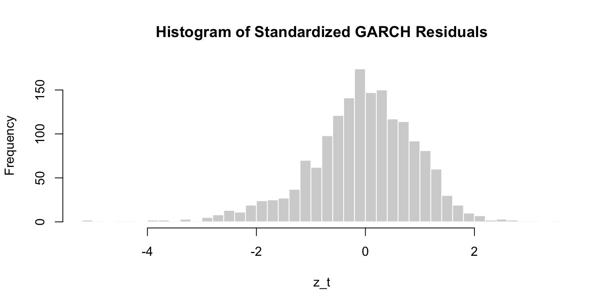

Stationarity The price series is not stationary. It trends upward over time and shows large structural movements, especially during 2020 and late 2023. The return series looks stationary as it fluctuates around zero with no trend and has a constant mean. The ADF test gives a p-value of 0.01, which means we reject the null of a unit root. This supports that the returns are stationary.
Volatility The return plot shows clear volatility clustering. There are quiet periods and then sudden spikes, especially during the 2020 crash and several later events. This pattern is typical of financial data and suggests that a GARCH-type model is appropriate for modeling the changing variance.
The ACF of returns dies out quickly and stays near zero after the first lag. The PACF has a few small spikes but nothing large beyond the first few lags.
This pattern suggests that returns have very little linear autocorrelation. I tested several ARMA orders and compared AIC values.
The AIC table shows that ARMA(2,1) has the lowest AIC. So I use ARMA(2,1) for the mean equation before fitting GARCH.
best_name <- aic_tbl$Model[1]best_mean_fit <- fit_list[[best_name]]cat("Selected mean model:", best_name, "\n")
Selected mean model: ARMA(2,1)
Code
summary(best_mean_fit)
Series: spx_ret
ARIMA(2,0,1) with non-zero mean
Coefficients:
ar1 ar2 ma1 mean
-0.1768 0.0867 0.0266 6e-04
s.e. 0.1548 0.0353 0.1541 3e-04
sigma^2 = 0.0001578: log likelihood = 4989.27
AIC=-9968.55 AICc=-9968.51 BIC=-9941.4
Training set error measures:
ME RMSE MAE MPE MAPE MASE
Training set -2.510169e-06 0.01254806 0.008278761 113.5597 166.4607 0.6778953
ACF1
Training set 0.0007188847
The residual plot from the ARMA(2,1) model still shows volatility clustering. Residuals are not constant in size. There are many periods with small movements and then sudden bursts.
The ACF of standardized residuals is near zero, meaning the ARMA model removed most linear dependence.
However, the squared residuals ACF and PACF both show very strong and slowly decaying spikes. This is a clear sign of ARCH effects.
The ARCH LM test also rejects the null (p < 2.2e-16), confirming that the variance is not constant.
This means a GARCH model is needed.
D. Mean Model Residuals & ARCH Effects
Code
res_mean <-residuals(best_mean_fit)par(mfrow=c(1,2))plot(res_mean, type="l", main="Residuals of Mean Model")acf(res_mean, main="Residual ACF")
#| label: arch-stdresid-mean#| warning: false#| fig.width: 8#| fig.height: 4# Standardized residuals for the ARMA-only modelstd_res_mean <- res_mean /sd(res_mean)par(mfrow=c(1,2))plot(std_res_mean, type="l", main="Standardized Residuals (Mean Model)")acf(std_res_mean, main="ACF of Standardized Residuals")

Code
par(mfrow=c(1,1))
Code
# Squared residuals to detect ARCH effects visuallysq_res <- res_mean^2par(mfrow=c(1,2))acf(sq_res, main="ACF of Squared Residuals")pacf(sq_res, main="PACF of Squared Residuals")

Code
par(mfrow=c(1,1))
The ACF of squared residuals shows a long decay and many significant lags. The PACF also has several significant early spikes.
These patterns are typical of conditional heteroskedasticity. They indicate that the current model cannot explain the changing volatility, and a GARCH or ARCH model is required.
Because the ACF decays slowly, a GARCH model is more appropriate than a pure ARCH model.
E. GARCH(p,q) Grid Search
Code
# Extract ARMA mean orders correctlyord <-arimaorder(best_mean_fit)p_mean <- ord[1]q_mean <- ord[3]cat("Mean model p =", p_mean, " q =", q_mean, "\n")
The standardized residual plot looks much more stable, with no obvious volatility clustering like before.
The ACF of standardized residuals has no significant spikes. The ACF of squared standardized residuals also shows no significant autocorrelation.
The Box-Ljung p-value for residuals is 0.28 and for squared residuals is 0.97. Both are greater than 0.05, so we fail to reject the null hypothesis. This means there is no remaining serial dependence or ARCH effects left.
The Q-Q plot shows slight deviations in the tails, which is normal for financial returns.
Overall, the diagnostics show that the GARCH model captures the volatility structure well.
Code
hist(z_resid, breaks=40, main="Histogram of Standardized GARCH Residuals",xlab="z_t", col="lightgray", border="white")

Code
# Box-Ljung test for standardized residuals and squared residualsljung_resid <-Box.test(z_resid, lag=20, type="Ljung-Box")ljung_sqres <-Box.test(z_resid^2, lag=20, type="Ljung-Box")cat("Box-Ljung test (residuals):\n")